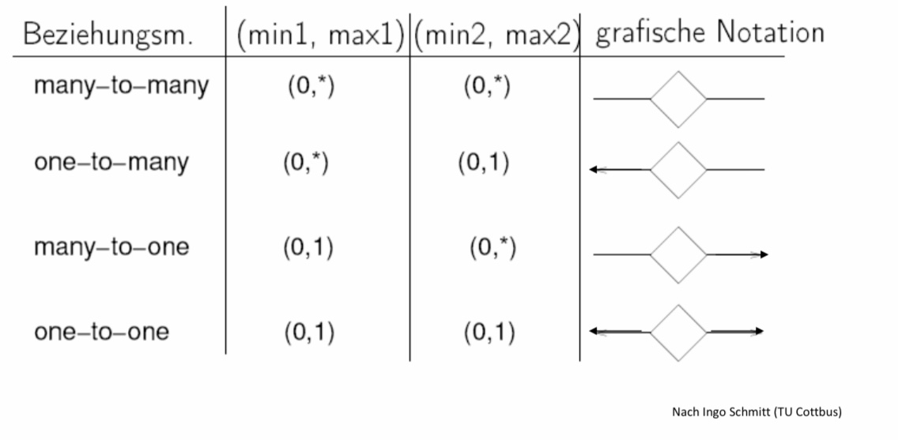

ER-Modellierung
Contents
5. ER-Modellierung¶
5.1. Einführung: Das Entity-Relationship-Modell¶


Nach Peter P. Chen 1976
The entity-relationship model – towards a unified view of data. ACM TODS
Standardmodell in der frühen Entwurfsphase
Instanz eines ER-Diagramms:
ER-Diagramme beschreiben Datenbanken, die eine Instanz haben (werden).
Der „Wert“ eines Entitytypen ist die (endliche) Menge der zugehörigen Entities.
Jeder Entity hat bestimmte Werte für seine Attribute.
Die Instanz eines n-ären Relationshiptypen ist eine Menge von Listen der Länge n.
Dies alles ist nur abstrakte Denkhilfe.
Modellierung im relationalen Modell unterscheidet sich.
Speicherung in einem DBMS unterscheidet sich.
5.2. Begriffe (Komponenten)¶
Entity
Ein Ding / Objekt der realen oder der Vorstellungswelt
Nicht direkt darstellbar, sondern nur über Eigenschaften beobachtbar
Entitytyp (entity set)
Eine Klasse für gleichartige Objekte
Relationship
Beschreibt Beziehungen zwischen zwei („konkreten“) Entities
Meist binär
Relationshiptyp
Eine Klasse für gleichartige Beziehungen
Attribut
repräsentiert eine Eigenschaft von Entities oder von Relationships
Zunächst nur primitive Datenwerte (String, Integer, …) und Operationen darauf
Später auch komplexe Attribute

5.3. Kardinalitäten von Relationships¶
Allgemein: Eine binäre Relationship kann beliebig viele Entities des einen Typen mit beliebig vielen des anderen Typen verbinden.
Ein Schauspieler kann in mehreren Filmen spielen.
In einem Film spielen mehrere Schauspieler.
„Kann“: D.h. nicht jeder Entity muss mit einem anderen verbunden sein.
In einem Animationsfilm spielen keine Schauspieler.
m:n Beziehung
Einschränkungen („Spezialfälle“)
1:n Beziehung
1:1 Beziehung

5.3.1. 1:n Relationships¶
Ein Entity vom Typ E kann mit beliebig vielen Entities des Typs F verbunden sein.
Ein Entity vom Typ F kann mit höchstens einem Entity des Typs E verbunden sein.
Beispiel
Ein Studio kann die Rechte an mehreren Filmen besitzen.
Ein Film kann nur von einem Studio besessen werden.
„Kann“: D.h. nicht jeder Entity muss mit einem anderen verbunden sein.
Ein neues Studio besitzt noch keinen Film.
Darstellung mittels eines Pfeils zur „1er“ Seite.

5.3.2. 1:1 Relationships¶
Ein Entity vom Typ E kann mit höchstens einem Entity des Typs F verbunden sein.
Ein Entity vom Typ F kann mit höchstens einem Entity des Typs E verbunden sein.
Beispiel
Ein Studio kann nur von einem Vorsitzenden geleitet werden.
Ein Vorsitzender kann nur ein Studio leiten.
„Kann“: D.h. nicht jeder Entity muss mit einem anderen verbunden sein.
Ein Studio kann (vorübergehend) keinen Vorsitzenden haben.

5.3.3. Weitere Notationen¶

5.4. Rolle von Relationships¶
Entitytypen können mehr als einmal in einer Relationship auftauchen.
Entsprechend mehrere Kanten
Jede Kante entspricht einer anderen Rolle.
Die Kanten werden mit den entsprechenden Rollen annotiert.


5.4.1. Konvertierung in binäre Relationships¶
Umwandlung n-ärer Relationships in binäre Relationships
Erstellung eines neuen, verbindenden Entitytyps
Neue n:1 Relationships zwischen dem neuen Entitytyp und den alten Entitytypen
Falls ein Entitytyp mehrere Rollen spielt, entsteht pro Rolle ein Relationshiptyp.
Attribute des Relationshiptyps werden an den neuen Entitytyp angehängt.
5.4.2. Attribute an Relationships¶
In manchen Fällen ist es hilfreich, Relationships Attribute zuzuordnen
Bsp: In dem Drehvertrag wird ein Gehalt festgestellt.
Zuordnung zu Schauspieler? Er könnte für verschiedene Filme unterschiedliche Gehälter bekommen.
Zuordnung zum Film? Verschiedene Schauspieler könnten unterschiedliche Gehälter bekommen.
Zuordnung zum Studio? Es könnte verschiedenen Schauspielern unterschiedliche Gehälter zahlen.

5.5. IST-Beziehung¶
Subklasse
Spezialfall / Spezialisierung
Weniger Entities
Mehr Attribute
Eventl. mehr Relationships
Besonderer Relationshiptyp
IST (is-a)
Darstellung durch Dreieck
Spitze zeigt zur Superklasse
Immer 1:1
Trotzdem keine Pfeile
5.5.1. IST-Beziehung als Bäume¶
IST-Beziehungen nur als Bäume
Keine Mehrfachvererbung
Ein Entity kann aus mehreren Komponenten des IST-Baumes bestehen.
„Krieg der Sterne“ hat vier Attribute.
„Cinderella“ hat vier Attribute und „Stimmen“-Relationships.
„Der dritte Mann“ hat vier Attribute und zusätzlich das Attribut „Waffen“.
„Roger Rabbit“ hat vier Attribute, zusätzlich das Attribut „Waffen“ und „Stimmen“-Relationships.
Anders als objekt-orientierte Modelle
In OO sind Objekte immer in genau einer Klasse; Subklassen erben von Superklasse(n).
In ER sind Entities in allen Subklassen repräsentiert, in die sie gehören.
In ER ist ein Entity in einer Subklasse auch automatisch in den Superklassen repräsentiert.
5.6. Nebenbedingungen(Constraints)¶
Schlüssel
Ein oder mehrere Attribute
Werte identifizieren eindeutig ein Entity.
Referentielle Integrität
Existenz des referenzierten Entities
Entspricht „dangling pointer“
Domänen
Einschränkung des Wertebereichs
Allgemeine Nebenbedingungen (assertions)
Z.B. nicht mehr als 10 Schauspieler pro Film
Nebenbedingungen sind Teil des Schemas. Sie leiten sich nicht aus den Daten ab!
5.7. Schlüssel¶
Ein Schlüssel ist eine (minimale) Menge von Attributen eines Entitytyps, für die gilt, dass keine zwei Entities gleiche Werte in allen Schlüsselattributen haben.
Einige Attributwerte können übereinstimmen.
Oft nur ein Attribut
Für jeden Entitytyp muss ein Schlüssel angegeben werden.
Es kann mehr als einen Schlüssel für einen Entitytyp geben.
Üblich: Primärschlüssel auswählen
Bei IST-Beziehungen muss die Wurzel-Superklasse sämtliche Schlüsselattribute enthalten.
Darstellung durch Unterstreichen der Attributnamen
5.7.1. Referentielle Integrität¶
Schlüssel: Höchstens ein bestimmter Wert für ein Attribut
Bzw. höchstens eine Wertekombination bei mehreren Attributen im Schlüssel
Referentielle Integrität: Genau ein bestimmter Wert
Bsp. n:1 Relationship zwischen „Filme“ und „Studios“
Ein Film kann zu höchsten einem Studio gehören.
Aber ein Film muss zu keinem Studio gehören.
Auch wenn ein Film zu einem Studio gehört, muss dieses nicht in der DB repräsentiert sein.
Referentielle Integrität erzwingt die Existenz und Repräsentation des Studios
„Erzwingen“
Bei Einfügen/Ändern eines Films muss entsprechendes Studio vorhanden sein.
Ein Studio darf nicht gelöscht werden, solange es noch Filme besitzt.
<br<
Oder: Wenn ein Studio gelöscht wird, werden auch alle entsprechenden Filme gelöscht.
Verschiedene Einstellungen im DBMS